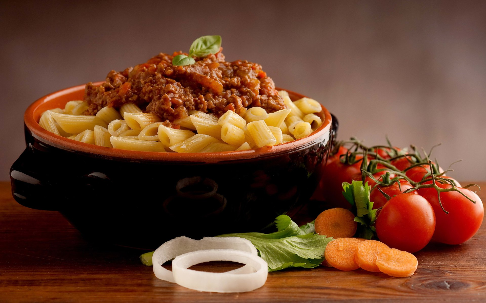

-

Viernes de Descuentini
Visitamos tenemos 50% de descuento por Black Friday!
-

50 años de experiencia
Especialistas en preparar las mejores pizzas del país.
-

Inaguaramos nueva Receta
Ven y prueba nuestra nueva pasta a la boloñesa. No te la puedes perder!